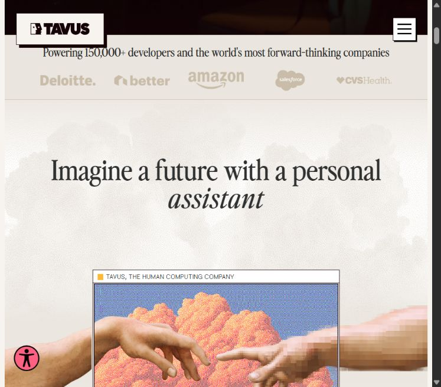
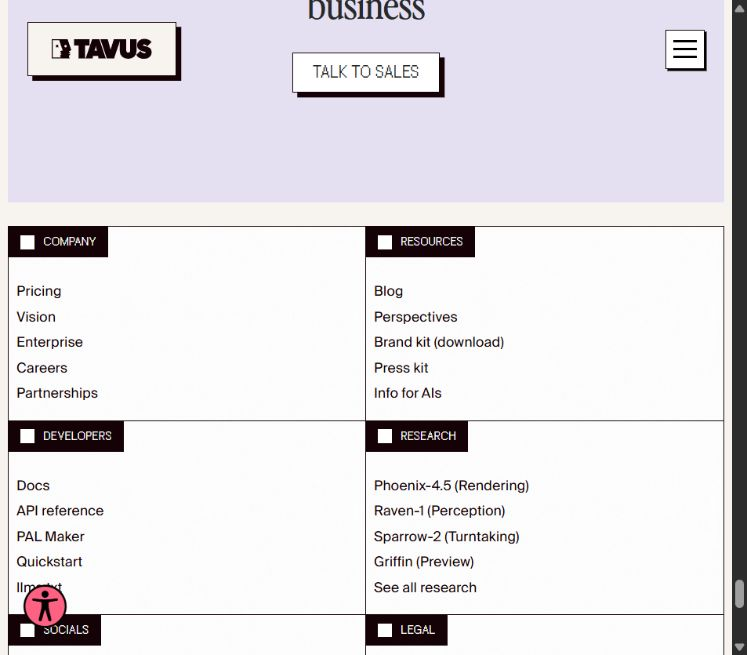
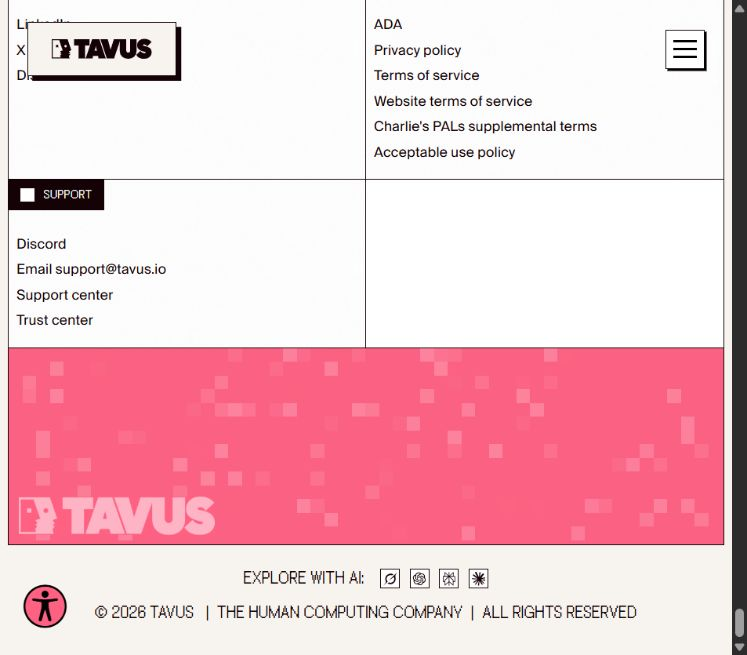

01 / TAVUS FOUNDATION, EGYPT SOURCES
A more vivid
A more vivid
way into the archive.
These proposals combine the Tavus paper, ink, Nile blue, pink, hard depth and raster labels with Egyptian photographs and print ephemera. The source objects remain visible as objects; treatment belongs to the surrounding interface.
IMAGE SYSTEMARABIC TYPEPUBLIC FOOTERCOMPONENT PATH
THE OBJECT STAYS LEGIBLEFour images.
Four images.
Four reading modes.
Use crop and colour as an editorial invitation, then provide an adjacent route to the full, unfiltered object. These are layout studies; source labels derive from the supplied file inventory and are not verified catalog descriptions.
A / FULL SOURCE PLATE NO CROP · NO FILTER
B / EDITORIAL FRAME UI TREATMENT ONLY
01 / PHOTOGRAPH
Crop for the opening; show the full object in a viewer with source, rights and transcription fields.
02 / PRINT EPHEMERA
Use a flat-colour inset and paper margin. Preserve folds, edges, type and native aspect ratio in the full view.
03 / MAP / BROCHURE
Pair a visual overview with a zoomable detail and a text index. Never make the image the only navigation.


TAVUS MATERIAL TRANSFER
Texture has a job.
Use a named surface role, one treatment at a time. The footer can carry a pixel field; editorial image margins can carry restrained grain. Tables, body copy and controls stay clean.
with a pulse.Footer or chapter transition · never behind small text
at the edge.Bounded directory band · contrast checked on an opaque panel
rhythm.Decorative threshold · source and construction note nearby



OPTICAL HIERARCHY TEST
Give Arabic its own measure.
Keep Tavus Perfectly Nineties, Suisse and FK Raster in the Latin system. Compare Arabic role candidates before adopting any family. The web-font candidates here are provisional; if they fail to load, the page falls back to the installed Noto faces.
مجموعة مصر / دراسة طباعية
صورٌ من الذاكرة المصرية
تفتح هذه المجموعة بابًا لقراءة الصور والملصقات والخرائط بوصفها وثائق لها سياق ومصدر وتاريخ. يبدأ التصميم من المادة نفسها، ثم يفسح مجالًا للشرح والبحث.
حالة الواجهة: جاهز
PRIORITIZED NEXT WORK
A system needs the less glamorous parts.
The visual examples above are review artifacts. Before Film, Kayffa or Data consumes them, the shared primitives need content limits, keyboard states, error paths, responsive behavior and source metadata.
| Order | Family | Missing contract | Review gate |
|---|---|---|---|
| 01 | Public shell & navigation | Header disclosure, locale switch, breadcrumb, footer directories, mobile collapse and focus return | 375 / 768 / desktop; English and Arabic wrapping; keyboard path |
| 02 | Media & provenance | Full-object viewer, optical crop, caption, source/rights note, zoom and missing/slow states | Original object reachable; attribution and rights fields present |
| 03 | Collection discovery | Search, filter, sort, pagination, result count, empty and error, URL state | Real Film and Kayffa data schemas; stable back/forward behavior |
| 04 | Forms & feedback | Field anatomy, validation, disabled/loading, confirmation, retry and destructive-action dialog | Keyboard, labels, error recovery and backend contract |
| 05 | Arabic type & content | Approved font licensing, role scale, bidi metadata and complete translation | Same-copy comparison, long labels, numerals and diacritics |
| 06 | Texture & geometry | Named pixel/grain roles, opacity limits, geometry source and no-repeat rules | Contrast, reduced motion and source/recipe record |
Promotion requires two consumer builds.
Package framework-neutral CSS and behavior contracts, then verify one Film web route and one Kayffa or Data route with real records. This review page does not change a production product.